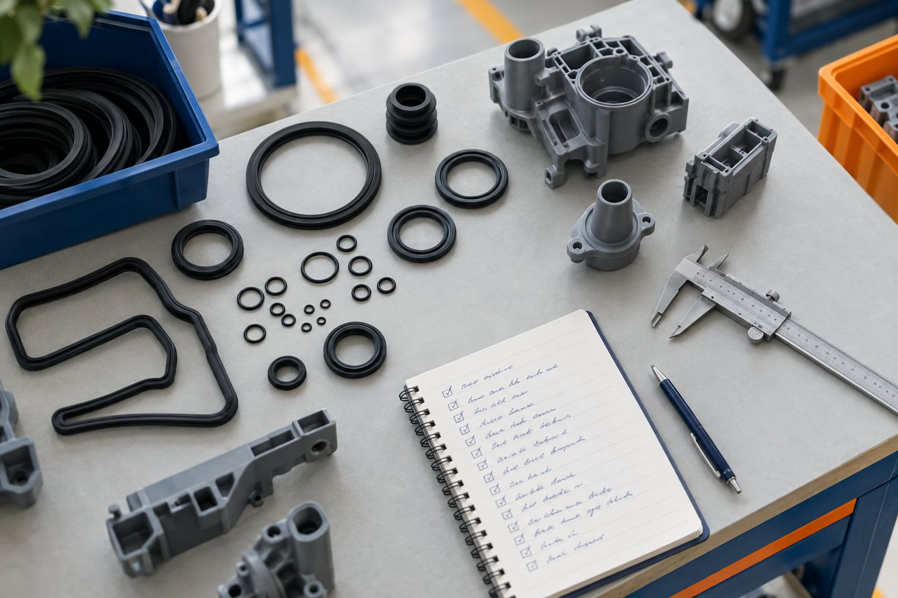

Injection plastique
Savoir technique
Le savoir de nos experts plasturgie et caoutchouc, rangé pour être trouvé en quelques secondes : défauts, contrôles dans l’ordre, mesures suivies. C’est ce référentiel qui guide VP Expert et VP Predict. Quelques exemples sont ouverts ici ; la base complète est livrée avec VP Expert.
